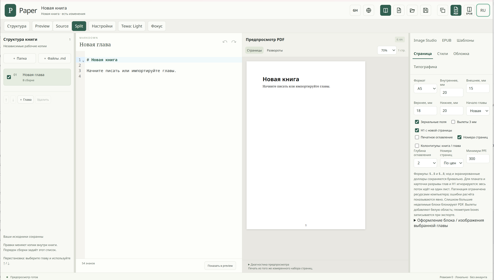

Редактор Markdown
Импортируйте несколько .md-файлов, упорядочивайте главы и редактируйте текст.
Paper
Создавайте книги, статьи и документацию. Настраивайте страницы, работайте с изображениями и экспортируйте результат для печати, электронных книг и веба.
Возможности ↓
Путь к публикации
Добавьте текст. Соберите и оформите страницы. Экспортируйте публикацию в PDF, EPUB или веб-форматы.
01 / ВОЗМОЖНОСТИ
Импортируйте несколько .md-файлов, упорядочивайте главы и редактируйте текст.
A4, A5, Letter или свой размер. Настраивайте поля, колонтитулы и нумерацию страниц.
Выбирайте шрифты и переносы. Настраивайте оформление заголовков, списков, таблиц и формул.
Размещайте и кадрируйте изображения, добавляйте подписи и готовьте их к публикации.
Переключайтесь между предпросмотром публикации, исходным Markdown и просмотром бок о бок.
Экспортируйте работу в PDF, EPUB 3.3, HTML или Markdown.
Работа с репозиториями и Markdown-документацией.
Реальные операции push и создания pull request ещё не проверены.
Загрузки
Скоро
Все загрузки